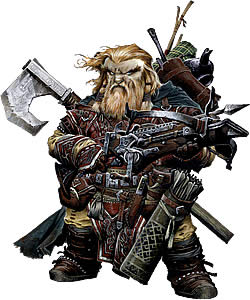

Para aquellos que saborean la emoción de la caza, sólo hay depredadores y presas. Sean cazadores, rastreadores o cazarrecompensas, los exploradores comparten mucho en común: la maestría única en armas especializadas, la habilidad para acechar incluso a la pieza de caza más evasiva y la capacidad para derrotar a una amplia variedad de presas. Cazadores entendidos, pacientes y hábiles, estos exploradores cazan hombres, bestias y monstruos por igual, ganando perspicacia en la senda del depredador, habilidad en entornos variados e incluso una habilidad marcial letal. Mientras que algunos rastrean a criaturas devorahombres para proteger la frontera, otros persiguen presas más astutas, incluso fugitivos entre su propia gente.
Papel: los exploradores son hábiles en la escaramuza, ya sea en combate cuerpo a cuerpo o a distancia, capaces de bailar con destreza dentro y fuera de la batalla. Sus habilidades les permiten hacer un daño significativo a determinados tipos de enemigos, pero sus conocimientos son valiosos contra todo tipo de enemigos.
Alineamiento: Cualquiera
Dado de Golpe: d10
Habilidades de clase: Artesanía (Int), Conocimiento de
conjuros (Int), Curar (Sab), Intimidar (Car), Montar (Des), Nadar (Fue),
Percepción (Sab), Profesión (Sab), Saber (Dungeons) (Int), Saber
(Geografía) (Int), Saber (Naturaleza) (Int), Sigilo (Des), Supervivencia
(Sab), Trato con animales (Car) y Trepar (Fue)
Rangos de habilidad por nivel: 6 +modificador de
Inteligencia
Competencia con armas y armaduras: un explorador es competente con todas las armas simples y marciales, con las armaduras ligeras e intermedias y con los escudos (excepto escudos paveses).
Enemigo predilecto (Ex): a nivel 1, un explorador elige un tipo de criatura de la tabla de enemigos predilectos. Obtiene un bonificador +2 a las pruebas de Engañar, Saber, Percepción, Averiguar intenciones y Supervivencia contra las criaturas del tipo seleccionado. Del mismo modo, recibe un bonificador +2 a las tiradas de ataque y daño contra ellos. Un explorador puede hacer pruebas de Saber no entrenadas al intentar identificar a estas criaturas.
A nivel 5º y cada cinco niveles en adelante (10º, 15º y 20º), el explorador puede elegir un enemigo predilecto adicional. Además, a cada intervalo, el bonificador contra uno cualquiera de sus enemigos predilectos (incluyendo, si lo desea, el que acaba de elegir) aumenta en +2.
Si el explorador elige humanoides o ajenos como enemigo predilecto, debe elegir un subtipo asociado como se indica en la tabla (ten en cuenta que hay otros tipos de humanoide para elegir en el Bestiario de Pathfinder RPG, aquellos mostrados en la tabla son simplemente los más comunes. Si una criatura específica entra en más de una categoría de enemigos predilectos, los bonificadores del explorador no se aplican, simplemente usa el que sea más alto.
| Enemigos predilectos del Explorador | |
| Tipo (Subtipo) | Tipo (Subtipo) |
| Aberración | Humanoide (otro subtipo)) |
| Animal | Bestia mágica |
| Constructo | Humanoide monstruoso |
| Dragón | Cieno |
| Hada | Ajeno (aire) |
| Humanoide (acuático) | Ajeno (caótico) |
| Humanoide (enano ) | Ajeno (tierra) |
| Humanoide (elfo ) | Ajeno (malvado) |
| Humanoide (gigante) | Ajeno (fuego) |
| Humanoide (trasgoide) | Ajeno (bien) |
| Humanoide (gnoll) | Ajeno (legal) |
| Humanoide (gnomo) | Ajeno (nativo) |
| Humanoide (mediano) | Ajeno (agua) |
| Humanoide (humano) | Planta |
| Humanoide (orco) | Muerto viviente |
| Humanoide (reptiliano) | Sabandija |
Rastrear (Ex): un explorador suma la mitad de su nivel (mínimo 1) a las pruebas de Supervivencia hechas para seguir rastros.
Empatía salvaje (Ex): un explorador puede mejorar la actitud de un animal. Esta aptitud funciona como una prueba de Diplomacia hecha para mejorar la actitud de una persona. El druida tira 1d20 y añade su nivel de druida y su modificador de Carisma para determinar el resultado de la prueba de Empatía animal. El animal doméstico típico tiene una actitud inicial de indiferente, mientras que los animales salvajes son normalmente malintencionados.
Para usar la empatía salvaje, el explorador y el animal deben estar a un máximo de 30 pies uno del otro bajo circunstancias normales.
Generalmente, influenciar a un animal de esta forma requiere 1 minuto, pero al igual que influenciar a personas, podría llevar más o menos tiempo.
Un explorador también puede usar esta aptitud para influenciar a una bestia mágica con una puntuación de Inteligencia de 1 ó 2, pero recibe un penalizador -4 a la prueba.
Dote de Estilo de Combate (Ex): a 2º nivel, un explorador debe elegir entre dos estilos de combate a seguir: tiro con arco o combate con dos armas. La especialización del explorador se manifiesta en forma de dotes adicioanles a 2º, 6º, 10º, 14º y 18º nivel. Puede elegir dotes de su estilo de combate elegido, incluso si no cumple los requisitos normales.
Si el explorador elige tiro con arco, puede elegir de la siguiente lista cuando gane una dote de estilo de combate: Disparo a larga distancia, Disparo a bocajarro, Disparo preciso y Disparo rápido. A 6º nivel, añade Disparo preciso mejorado y Disparo múltiple a la lista. A 10º nivel, añade Disparo a la carrera y Puntería precisa a la lista.
Si el explorador elige combate con dos armas, puede seleccionar dotes de la siguiente lista cuando obtenga una dote de estilo de combate: Doble tajo, Golpear con el escudo mejorado, Desenvainado rápido y Combate con dos armas. A 6º nivel, añade Combate con dos armas mejorado y Defensa con dos armas a la lista. A 10º nivel, añade Combate con dos armas mayor y Desgarrar con dos armas a la lista.
Los beneficios de las dotes de estilo elegidas por el explorador sólo se aplican cuando lleve armadura ligera, intermedia o ninguna armadura. Pierde todos los beneficios de sus dotes de estilo de combate cuando lleve armadura pesada. Una vez que un explorador elige un estilo de combate, ya no puede cambiarlo.
Aguante: un explorador obtiene Aguante como dote adicional a nivel 3.
Terreno predilecto (Ex): a nivel 3, un explorador puede elegir un tipo de terreno de la tabla de Terrenos predilectos. El explorador gana un bonificador +2 a las pruebas de Iniciativa y a las pruebas de Saber (geografía), Percepción, Sigilo y Supervivencia cuando esté en ese tipo de terreno. Un explorador viajando por su terreno predilecto normalmente no deja rastro y no puede ser rastreado (aunque puede dejar un rastro si lo desea).
A 8º nivel y cada cinco niveles en adelante, el explorador puede elegir un terreno predilecto adicional. Además, en cada uno de esos intervalos, el bonificador para uno cualquiera de sus terrenos predilectos (incluyendo el que acaba de elegir, si lo desea) aumenta en +2.
Si un terreno específico entra dentro de más de una categoría de terreno predilecto, los bonificadores del explorador no se apilan, simplemente utiliza el bonificador más alto.
| Terrenos Predilectos |
| Frío (hielo, glaciares, nieve y tundra) |
| Desierto (arena y tierras baldías) |
| Bosque (coníferas y caducifolios) |
| Jungla |
| Montaña (incluidas colinas) |
| Llanura |
| Los Planos (elige uno distinto del Plano Material) |
| Pantano |
| Subterráneo (cuevas y dungeons) |
| Urbano (edificios, calles y alcantarillas) |
| Agua (por encima y bajo la superficie) |
Vínculo del cazador (Ex): a 4º nivel, un explorador forma un vínculo con sus compañeros de caza. Este vínculo puede adoptar una de las siguientes formas y una vez que se ha elegido, no puede cambiarse. La primera es un vínculo con sus compañeros. Este vínculo le permite gastar una acción de movimiento para conceder la mitad de sus bonificadores por enemigo predilecto contra un blanco concreto del tipo apropiado a todos los aliados que se encuentren a un máximo de 30 pies y que puedan verle u oírle. Este bonificador dura un número de asaltos igual al modificador de Sabiduría del explorador (mínimo 1). Este bonificador no se apila con otros bonificadores por enemigo predilecto que posean los aliados, usan el que sea mayor.
La segunda opción es un vínculo cercano con un compañero animal. El explorador que elija un compañero animal, puede seleccionarlo de la siguiente lista: tejón, ave, camello, felino (pequeño), rata terrible, perro, caballo, poni, serpiente (víbora o constrictora) o lobo. Si la campaña tiene lugar total o parcialmente en un entorno acuático, el explorador puede elegir un tiburón como compañero. Este animal es un compañero leal que sigue al explorador en sus aventuras de la forma apropiada a su raza. El compañero animal de un explorador comparte sus bonificadores por enemigo y terreno predilectos.
Esta aptitud funciona como la aptitud de compañero animal del druida (que es parte del rasgo de clase de Vínculo natural), excepto en que el nivel efectivo de druida del explorador es igual a su nivel de explorador -3.
Conjuros: comenzando a 4º nivel, un explorador obtiene la capacidad de lanzar un pequeño número de conjuros divinos, que se eligen de la lista de conjuros de explorador. Un explorador debe elegir y preparar sus conjuros por adelantado..
Para preparar o lanzar un conjuro, un explorador debe poseer una puntuación de Sabiduría de al menos 10 + el nivel del conjuro. La Clase de Dificultad para una tirada de salvación contra los conjuros de un explorador es 10 + el nivel del conjuro + el modificador de Sabiduría del explorador.
Como otros lanzadores de conjuros, un explorador sólo puede lanzar un número determinado de conjuros de cada nivel al día. Su selección diaria de conjuros se indica en la tabla de más abajo. Además, recibe conjuros adicionales al día si tiene una elevada puntuación de Sabiduría. Cuando la tabla indica que un explorador tiene 0 conjuros al día de un nivel determinado, sólo obtiene los conjuros adicionales debidos a su puntuación de Sabiduría para ese nivel de conjuro.
Un explorador debe dedicar 1 hora al día a meditar tranquilamente para recuperar su selección diaria de conjuros. Un explorador puede preparar y lanzar cualquier conjuro de la lista de explorador, suponiendo que pueda lanzar conjuros de ese nivel, pero debe seleccionar qué conjuros prepara durante su meditación diaria.
Hasta el nivel 3, un explorador no posee nivel de lanzador. A nivel 4 y en adelante, su nivel de lanzador es igual a su nivel de explorador -3.
Zancada forestal (Ex): comenzando a nivel 7 º, un explorador puede moverse a través de cualquier clase de maleza (como arbustos espinosos, brezos, áreas cubiertas por la maleza y terrenos similares) a su velocidad normal sin recibir daño o sufrir otro impedimento. Los arbustos espinosos, brezos y áreas con maleza manipuladas mágicamente para impedir el movimiento, sin embargo, todavía le afectan.
Rastreador veloz (Ex): comenzando a 8º nivel, un explorador puede moverse a su velocidad normal mientras usa Supervivencia para seguir rastros sin el penalizador normal de -5. Sólo tiene un penalizador -10 (en lugar del habitual -20) al moverse al doble de su velocidad normal mientras rastrea.
Evasión (Ex): cuando llega a nivel 9, un explorador puede evitar incluso los ataques mágicos o insólitos con gran agilidad. Si supera uan tirada de Salvación de Reflejos contra un ataque que normalmente causa la mitad del daño con una tirada exitosa, en su lugar no recibe ningún daño. Evasión puede usarse sólo si el explorador lleva armadura ligera, intermedia o ninguna armadura. Un explorador indefenso no obtiene el beneficio de evasión.
Presa (Ex): a 11º nivel, un explorador puede, como acción estándar, designar a un objetivo dentro de su línea de visión como su presa. Mientras esté siguiento el rastro de su presa, un explorador puede elegir 10 en sus pruebas de habilidad de Supervivencia mientras se mueve a velocidad normal, sin penalización. Además, recibe un bonificador introspectivo +2 a las tiradas de ataque hechas contra su presa y todas las amenazas de crítico se confirman automáticamente. Un explorador no puede tener más de una presa al mismo tiempo y el tipo de criatura debe coincidir con uno de sus tipos de enemigo predilecto. Puede descartar este efecto en cualquier momento como acción gratuita, pero no puede serleccionar una nueva presa durante 24 horas. Si el explorador ve pruebas de que su presa está muerta, puede seleccionar una nueva presa tras esperar 1 hora..
Camuflaje (Ex): un explorador de 12º nivel o mayor puede usar la habilidad de Sigilo para ocultarse en cualquiera de sus terrenos predilectos, incluso si el terreno no proporciona cobertura u ocultación.
Evasión mejorada (Ex): a 16º nivel, la evasión del explorador mejora. Esta aptitud funciona como evasión, excepto en que además de no recibir daño al superar una tirada de salvación de Reflejos contra un ataque, sólo recibe la mitad del daño con una tirada de salvación fallida. Un explorador indefenso no recibe los beneficios de la evasión.
Esconderse a plena vista (Ex): mientras está en alguno de sus terrenos predilectos, un explorador de 17º nivel o mayor puede utilizar la habilidad de Sigilo incluso mientras está siendo observado.
Presa mejorada (Ex): a 19º nivel, la aptitud del explorador para cazar a su presa mejora. Ahora puede elegir una presa como acción gratuita y puede elegir 20 mientras usa su habilidad de Superviviencia para rastrear a su presa, mientras se mueve a velocidad normal sin penalización. Su bonificador introspectivo al atacar a supresa mejora hasta +4. Si su presa muere o se descarta, puede elegir una nueva tras 10 minutos.
Maestro cazador (Ex): un explorador de 20º nivel se convierte en un maestro cazador. Siempre puede moverse a velocidad completa utilizando Supervivencia para seguir rastros sin penalización. Puede, como acción estándar, hacer un único ataque contra su enemigo predilecto con el bonificador de ataque completo. Si el ataque impacta, el blanco recibe el daño normalmente y debe hacer una tirada de salvación de Fortaleza o morir. La CD de esta tirada de salvación es igual a 10 + 1/2 del nivel del explorador + el modificador de Sabiduría del explorador. Un explorador también puede elegir causar una cantidad de daño atenuado igual a los puntos de vida actuales de la criatura. Una tirada de salvación con éxito niega este daño. Un explorador puede utilizar esta aptitud una vez al día contra cada tipo de enemigo predilecto que posea, pero no contra la misma criatura más de una vez en un periodo de 24 horas.
A nivel 2, un explorador debe elegir uno de los dos estilos de combate presentados en el manual básico o uno de los siguientes nuevos estilos de combate: ballesta, combate montado, arma natural, arma a dos manos o estilo de arma y escudo. El explorador puede elegir dotes de su estilo de combate elegido incluso si no cumple los prerrequisitos normales.
Ballesta: si el explorador elige el estilo de ballesta, puede elegir de entre la siguiente lista cuando obtiene una dote de estilo de combate: Disparo concentrado, Disparo preciso, Puntería mortal y Recarga rápida. A nivel 6 añade Disparo preciso mejorado y Maestría con ballestas y a la lista. A nivel 10, añade Disparo a la carrera y Puntería precisa a la lista.
Combate montado: si el explorador elige el estilo de combate montado, puede elegir de entre la siguiente lista cuando obtiene una dote de estilo de combate: Ataque al galope, Combatir desde una montura, Disparar desde una montura y Truco desde una montura. A nivel 6, añade Carga impetuosa y Escudarse desde una montura a la lista. A nivel 10, añade Desmontar jinete y Hostigador montado.
Arma natural: si el explorador elige el estilo de arma natural, puede elegir de entre la siguiente lista cuando obtiene una dote de estilo de combate: Arma natural mejorada, Aspecto de la bestia, Garras destripadoras y Soltura con un arma. A nivel 6, añade Garras mágicas y Golpe vital a la lista. A nivel 10, añade Ataque múltiple e Golpe vital mejorado a la lista.
Arma a dos manos: si el explorador elige el estilo de arma a dos manos, puede elegir de entre la siguiente lista cuando obtiene una dote de estilo de combate: Asalto a empujones, Ataque poderoso, Escudo de mandobles y Hendedura. A nivel 6, añade Gran hendedura y Soltura furiosa y a la lista. A nivel 10, añade Matanza pavorosa y Romper arma mejorado a la lista.
Arma y escudo: si el explorador elige el estilo de arma y escudo, puede elegir de entre la siguiente lista cuando obtiene una dote de estilo de combate: Combate con dos armas, Golpear con el escudo mejorado y Golpetazo con el escudo. A nivel 6, añade Escudo salvador y Maestro del escudo a la lista. A nivel 10, añade Golpetazo final y Soltura mayor con los escudos a la lista.
Puedes consultar la lista de conjuros del Explorador aquí.
|
El Explorador
|
||||||||||
|
Nivel |
Ataque base | S. de Fort. | S. de Ref. | S. de Vol. | Especial | Conjuros diarios | ||||
| 1 | 2 | 3 | 4 | |||||||
| 1 | +1 | +2 | +2 | +0 | 1º Enemigo predilecto, Rastrear, Empatía salvaje | -- | -- | -- | -- | |
| 2 | +2 | +3 | +3 | +0 | Dote de Estilo de combate | -- | -- | -- | -- | |
| 3 | +3 | +3 | +3 | +1 | Aguante, 1º Terreno predilecto | -- | -- | -- | -- | |
| 4 | +4 | +4 | +4 | +1 | Vínculo del cazador | 0 | -- | -- | -- | |
| 5 | +5 | +4 | +4 | +1 | 2º Enemigo predilecto | 1 | -- | -- | -- | |
| 6 | +6/+1 | +5 | +5 | +2 | Dote de Estilo de combate | 1 | -- | -- | -- | |
| 7 | +7/+2 | +5 | +5 | +2 | Zancada forestal | 1 | 0 | -- | -- | |
| 8 | +8/+3 | +6 | +6 | +2 | Rastreador veloz , 2º Terreno predilecto | 1 | 1 | -- | -- | |
| 9 | +9/+4 | +6 | +6 | +3 | Evasión | 2 | 1 | -- | -- | |
| 10 | +10/+5 | +7 | +7 | +3 | 3º Enemigo Predilecto, Dote de Estilo de combate | 2 | 1 | 0 | -- | |
| 11 | +11/+6/+1 | +7 | +7 | +3 | Presa | 2 | 1 | 1 | -- | |
| 12 | +12/+7/+2 | +8 | +8 | +4 | Camuflaje | 2 | 2 | 1 | -- | |
| 13 | +13/+8/+3 | +8 | +8 | +4 | 3º Terreno predilecto | 3 | 2 | 1 | 0 | |
| 14 | +14/+9/+4 | +9 | +9 | +4 | Dote de Estilo de combate | 3 | 2 | 1 | 1 | |
| 15 | +15/+10/+5 | +9 | +9 | +5 | 4º Enemigo predilecto | 3 | 2 | 2 | 1 | |
| 16 | +16/+11/+6/+1 | +10 | +10 | +5 | Evasión mejorada | 3 | 3 | 2 | 1 | |
| 17 | +17/+12/+7/+2 | +10 | +10 | +5 | Esconderse a plena vista | 4 | 3 | 2 | 1 | |
| 18 | +18/+13/+8/+3 | +11 | +11 | +6 | 4º Terreno predilecto, Dote de Estilo de combate | 4 | 3 | 2 | 2 | |
| 19 | +19/+14/+9/+4 | +11 | +11 | +6 | Presa mejorada | 4 | 3 | 3 | 2 | |
| 20 | +20/+15/+10/+5 | +12 | +12 | +6 | 5º Enemigo predilecto, maestro cazador | 4 | 4 | 3 | 3 | |